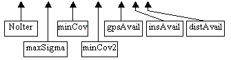

(*.prj)
This is the main control input text file for a bundle adjustment project. It can start with a set of comment lines (lines starting with ‘!’ character) describing the project and parameters but no comments are allowed in or after the data lines. It contains the following parameters in order:
1 |
2 |
3 |
4 |
5 |
6 |
7 |
| noIter |
maxSigma |
minCov |
minCov2 |
gpsAvail |
insAvail |
distanceAvail |
1. Maximum number of iterations for the bundle adjustment procedure.
2. The maximum allowable difference between unit weight variances in successive
iterations. If the difference is less than this value, then the iterations
will stop.
3 & 4. MinCov, and MinCov2: variance thresholds. In the BASC program, all involved parameters can be treated either as:
- Constants (perfectly known quantities),
- Parameters with prior knowledge of certain accuracy, or
-
Variables (unknowns).
This is done according to the threshold variances (minCov and minCov2) as follows:

- Any parameter with a variance greater than minCov will be treated as variable (unknown).
- Parameters with variances smaller than minCov2 will be treated as a constant (they will not be involved in the adjustment).
- If a parameter has a dispersion matrix element lying between the two thresholds, it will be considered as a parameter with prior knowledge of certain accuracy (defined by the dispersion matrix).
5. GPS availability: Flag to indicate whether or not GPS information at the exposure station is available. If this information is available, a GPS File (*.gps) should be created.
6. INS availability: Flag to indicate whether or not INS information at the exposure station is available. If this information is available, an GPS File (*.gps) should be created.
7. Distance availability. A flag that indicates if known distances between object points are available. In case of the existence pf such distances, a Distance File (*.dis) should be prepared. This file contains these distances and their variances.
Example:
!
This is a new bundle adjustment project; the following comments explain
different input values
! and options
! 1. I need to limit the number of iterations to 80
! 2. maxSigma = 1.0E-8
! 3. minCov = 1.0E+4
! 4. minCov2 = 1.0E-7
! 5. No GPS data available,
! 6. No INS data available, and
! 7. No known distances are available
! The data line will be in the following order:
! noIter>> maxSigma>> minCov>> minCov2>> gpsAvail>>
insAvail>> distanceAvail
| 80 |
1.0E-8 |
1.0E+4 |
1.0E-7 |
0 |
0 |
0 |

In this example data from GPS/INS and distances is not available.